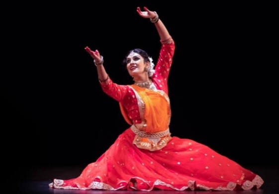

नृत्य भी मानवीय अभिव्यक्तियों का एक रसमय प्रदर्शन है। यह एक सार्वभौम कला है, जिसका जन्म मानव जीवन के साथ हुआ है। बालक जन्म लेते ही रोकर अपने हाथ पैर मार कर अपनी भावाभिव्यक्ति करता है कि वह भूखा है- इन्हीं आंगिक -क्रियाओं से नृत्य की उत्पत्ति हुई है।

हस्तकला ऐसे कलात्मक कार्य को कहते हैं जो उपयोगी होने के साथ-साथ सजाने के काम आता है तथा जिसे मुख्यत: हाथ से या सरल औजारों की सहायता से ही बनाया जाता है। ऐसी कलाओं का धार्मिक एवं सांस्कृतिक महत्त्व होता है। इसके विपरीत ऐसी चीजें हस्तशिल्प की श्रेणी में नहीं आती जो मशीनों द्वारा बड़े पैमाने पर बनाये जाते हैं।
हस्तशिल्प से विभिन्न प्रकार के कागज़ , लकड़ी , मिटटी , पत्त्थर , धातु , चित्रकारी , जूट के सामान इत्यादि बनाये जाते है। भारत अपनी कला और अनोखी संस्कृति के लिए विश्व भर में लोकप्रिय है। भारत कई प्रकार के कुशल कारीगर है और उनके रचनातमक कला ने भारतीय हस्तशिल्प को प्रसिद्ध बनाया।